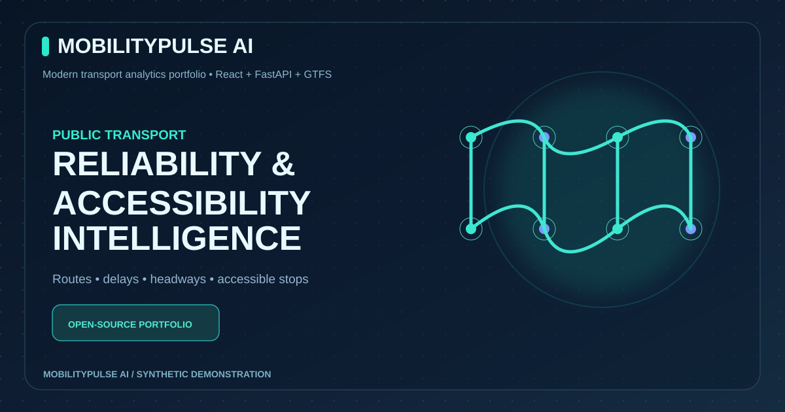
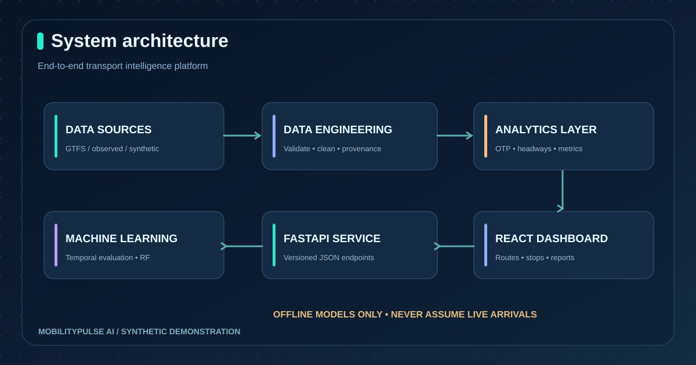
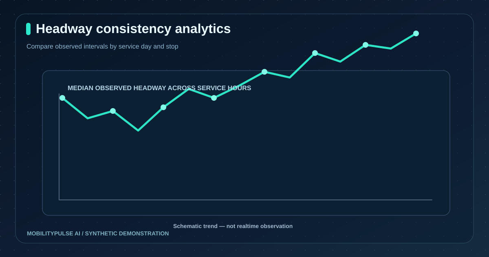
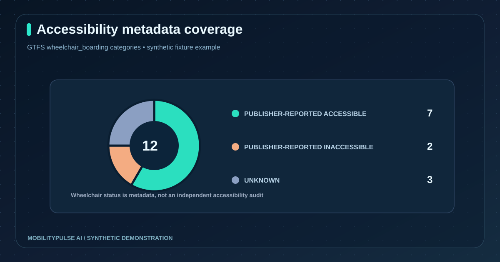
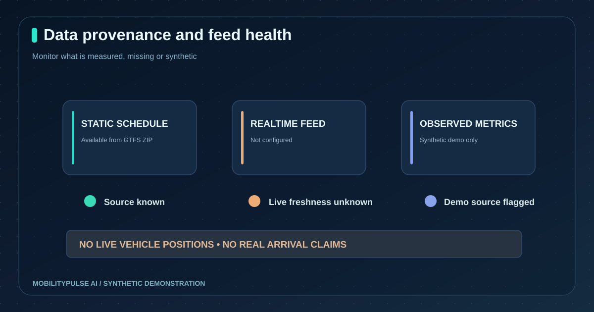

Smarter transport.
Clearer data.
Better questions.
MobilityPulse AI brings together GTFS feeds, historical service performance, geospatial stop exploration and accessibility metadata in one transparent full-stack analytics experience.

Timetables aren't reliability.
Published transit schedules describe planned service. They do not demonstrate whether riders experienced on-time performance, regular service intervals or accessible boarding. MobilityPulse separates what is scheduled from what is actually observed, keeps unknowns visible, and gives analysts a reproducible platform for exploration.
From raw data to a usable product.
GTFS validation
Read authorized schedule ZIPs, inspect required columns, coordinate ranges and foreign keys.
Source-aware modeling
Mark synthetic, schedule-only, and externally supplied events without inventing actual arrivals.
Reliability analytics
Compute punctuality, cancellations, P90 delay and same-stop observed headways.
Offline regression
Evaluate RandomForest on a chronological holdout and compare to a median baseline.
Interactive interface
Explore route maps, stop information, charts, accessibility and feed-health details.
CI, APIs, Docker
FastAPI service contracts, Python tests, React build checks and local Docker packaging.
Traceable from source to insight.
Data flows through explicit validation and provenance gates before analytics or model evaluation. The app intentionally exposes missing realtime information rather than presenting schedule estimates as observed arrivals.

GTFS Schedule ZIP ──► Validation ──► Source-aware catalog
Historical events ──► Data contracts ──────┤
Synthetic fixture ──────────────────────────┘
│
┌────────────┴─────────────┐
▼ ▼
Reliability analytics Accessibility
│ │
└────────────┬─────────────┘
▼
FastAPI REST layer
▼
React transport UI
│
CSV / Power BI
│
Offline ML evaluationTen original project visuals.
All visual assets are vector-based and render directly in the repository. Illustrative chart values are synthetic examples, not measurements from live transport systems.





Demonstration built for scrutiny.
Observed events only
On-time means delay within -1 and +5 minutes, only when actual timestamps are available. Missing observations remain null.
Unknown stays unknown
GTFS wheelchair metadata is publisher-reported. No step-free access guarantees are asserted.
Chronological testing
Model metrics are for a synthetic dataset. This is not a deployed or validated passenger forecasting service.
Reference documentation: architecture · data ethics · metric definitions · model card.
Source code, visual systems,
and reproducible analytics.
Review the repository and run the application locally to understand the engineering behind the demo.